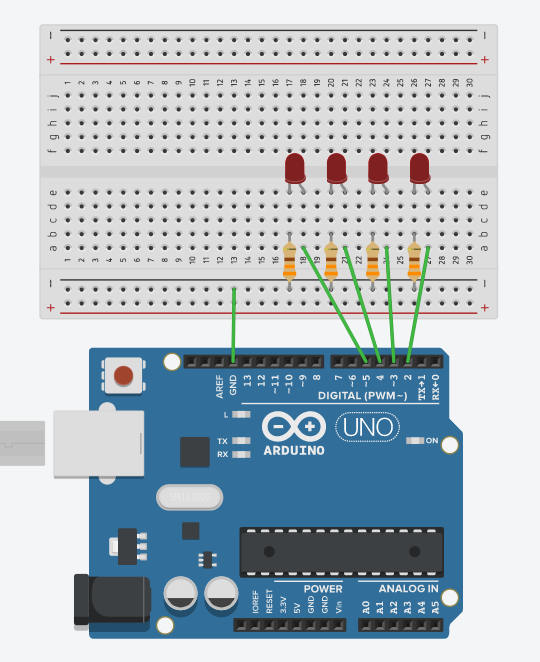

Primeiro projeto - Contador binário
Agora que você sabe o básico do funcionamento do Arduíno e de alguns componentes eletrônicos, utilizar esse conhecimento para criar um pequeno projeto, pois a prática é essencial para a fixação do aprendizado. Nesa seção você aprenderá a fazer um contador binário de 4 bits, ou seja, onde será possível contar de 0 a 15 utilizando LEDs.
Hardware
Materiais necessários
- 4 LEDs
- 4 resistores de 330 Ω
- 5 jumpers
Esquemático

Utilize jumpers para conectar o terminal positivo (Anodo) de cada um dos LEDs em um pino digital da placa. A escolha dos pinos é arbitrária, mas lembre-se de inserir corretamente no momento de escrever o software. Insira nos terminais negativos (cátodo) os resistores, conectando a trilha negativa da faixa de barramentos. Insira também um jumper conectando a trilha ao pino GND da placa.
Software
Primeiramente é necessário fazer uma declaração para ter um controle mais facilitado sobre os LEDs. Para isso, basta inserir no início do código int led[] = {3, 4, 5, 6};. Neste vetor você deve colocar os pinos digitais em que os leds estarão conectados na placa Arduino.
Em seguida, dentro da função setup(), é necessário configurar os pinos dos leds como OUTPUT. A função ficará da seguinte forma:
void setup()
{
pinMode(led[0], OUTPUT);
pinMode(led[1], OUTPUT);
pinMode(led[2], OUTPUT);
pinMode(led[3], OUTPUT);
}
Uma forma alternativa e mais otimizada de realizar tal operação é utlizando um laço. Como se está utilizando vetores, isso aparece naturalmente, a função ficará da seguinte forma:
void setup()
{
for (int i=0; i<4; i++)
{
pinMode(led[i], OUTPUT);
}
}
Com todos os pinos configurados, é possível trabalhar agora na função loop(). Como a contagem é de 0 a 15, é necessário fazer um laço for() apropriado para isso, onde será criada uma variável chamada de num que percorrerá as posições de 0 até 15.
for (byte num=0; num<=15; num++)
A função bitRead()
A função bitRead(num, n) é essencial para este projeto. A função lê o bit n (sendo 0 o bit menos significativo) de um dado valor num. Por exemplo, para o valor 13, que é representado em binário como sendo 1101, os bits 0, 2 e 3 são 1, enquanto o bit 1 é 0.
Será necessário checar cada um dos 4 bits da variável num para que os LEDs possam ser definidos de acordo com o valor retornado pela função readBit(). Para isso, outro laço deve ser criado: for (int n=0; n<=3; n++). A cada iteração do laço, será feita a verificação de cada bit do número, utilizando a função bitRead(). Caso ela retorne 1, o um sinal HIGHserá enviado para o pino do LED, fazendo com que ele acenda; caso contrário, será enviado sinal LOW, fazendo com que ele apague.
if (bitRead(num, n) == 1)
{
digitalWrite(led[n], HIGH);
}
else
{
digitalWrite(led[n], LOW);
}
}
Tecnicamente, o contador está pronto. Mas o que acontecerá ao rodar o código desta maneira? Você provavelmente verá todos os leds acesos, ou até quem sabe apagados. Isso acontece pois o código roda tão rápido e os LEDs estão constantemente se acendendo e apagando que você tem uma impressão de continuidade. Para que seja possível ver os efeitos do contador nos LEDs, é necessário utilizar uma função de delay. 2 segundos é um bom tempo para ver o contador funcionando. Acrescente após o laço for delay(2000);.
O código completo ficará da seguinte maneira:
/* Programa com a implementação de um contador binário de 4 bits utilizando LEDs */
int led[] = {2, 3, 4, 5}; // Vetor representando os pinos dos leds
void setup()
{
// Seta todos os pinos dos leds como OUTPUT
for (int i=0; i<4; i++)
{
pinMode(led[i], OUTPUT);
}
}
void loop()
{
for (byte num=0; num<=15; num++)
{
for (int n=0; n<=3; n++)
{
if (bitRead(num, n) == 1)
{
// Se o bit lido for 1, o led na posição correspondente irá acender
digitalWrite(led[n], HIGH);
}
else
{
// Caso o bit for 0, o led irá apagar
digitalWrite(led[n], LOW);
}
}
// Delay de 2 segundos para o contador ser perceptível.
delay(2000);
}
}